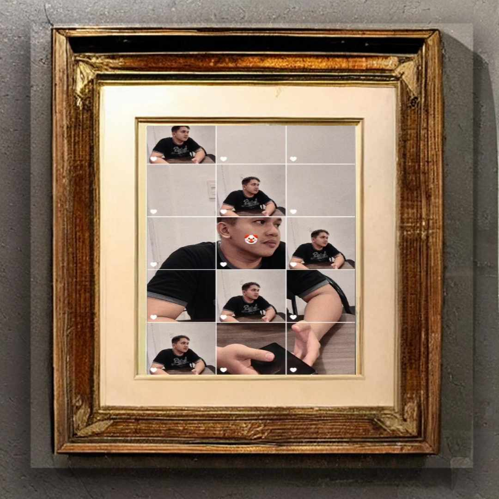
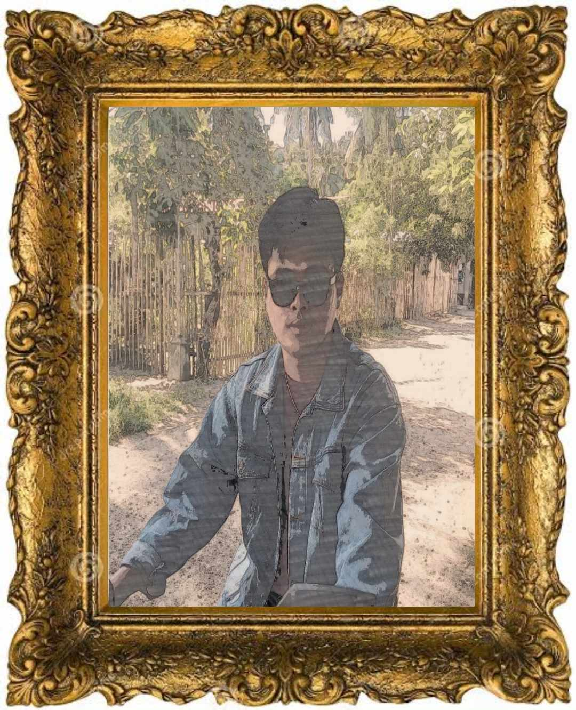
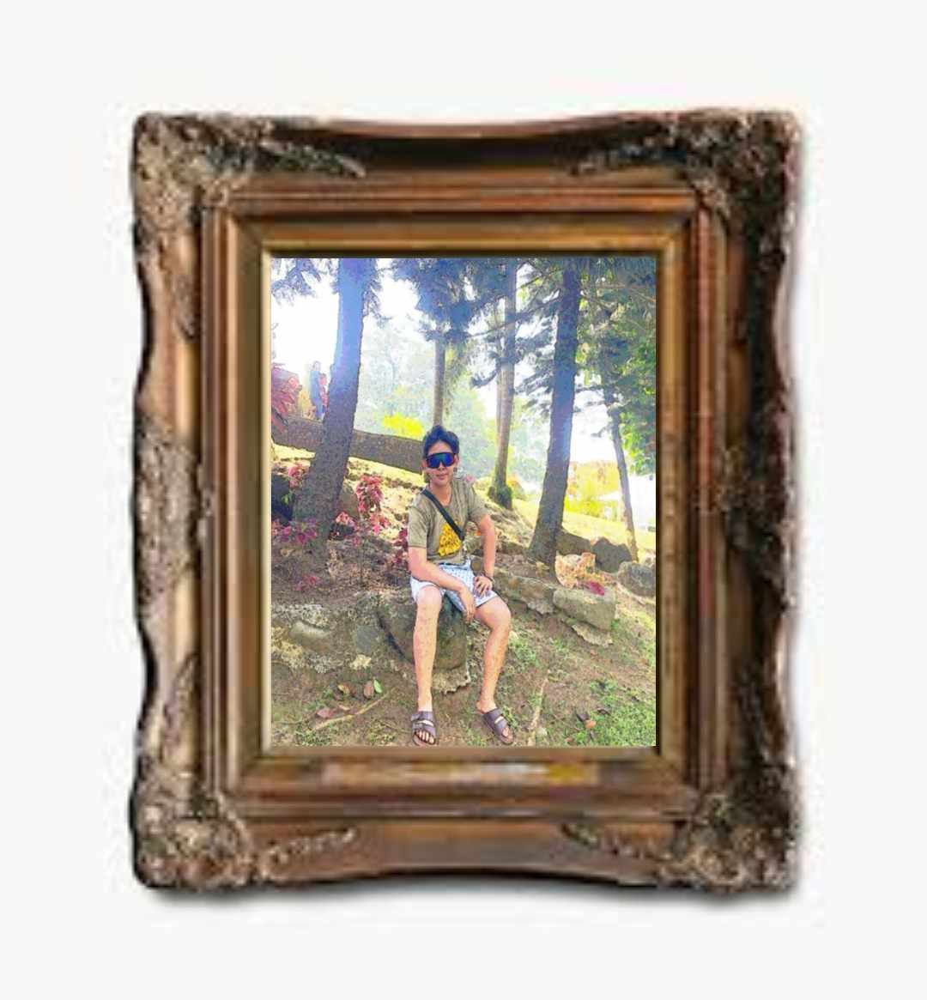

About Us
Welcome to Masterpiece Gallery Emporium, your premier destination for exquisite paintings that inspire and captivate. At Masterpiece Gallery Emporium, we are passionate about the timeless beauty and emotive power of art. Specializing exclusively in paintings, we curate a carefully selected collection of works that showcase the creativity and talent of artists from around the world. Our mission is simple: to connect art enthusiasts with exceptional paintings that resonate with their unique tastes and preferences. Whether you're seeking a stunning landscape, a thought-provoking abstract piece, or a charming portrait, we have something to suit every style and space. Each painting in our collection is meticulously chosen for its artistic merit, craftsmanship, and ability to evoke emotion. We believe that art has the power to enrich our lives, evoke memories, and spark conversation, and we're committed to helping you find the perfect piece to adorn your home or office. As a dedicated team of art lovers, we are here to provide you with a seamless shopping experience from start to finish. With our easy-to-navigate website, secure payment options, and exceptional customer service, we strive to make your journey to finding the perfect painting an enjoyable and memorable one. Thank you for choosing Masterpiece Gallery Emporium. We look forward to helping you discover the perfect painting to add beauty and inspiration to your life.
Products
Product 1
"Rennel" is a captivating vintage painting that exudes timeless elegance and charm. Created in a style reminiscent of the late 19th century, "Rennel" transports viewers to a bygone era with its classical techniques and rich narrative. The artwork depicts a scene that captures the essence of a historic moment or a serene landscape, inviting viewers to immerse themselves in its captivating beauty. With its muted color palette and meticulous attention to detail, "Rennel" serves as a poignant reminder of the enduring allure and craftsmanship of vintage art, leaving a lasting impression on all who behold it.
Price: $36.00

Product 2
"Art" is a stunning pastel painting that mesmerizes with its soft, velvety textures and delicate hues. Pastel painting, known for its blendable pigments and rich colors, brings "Art" to life with a sense of warmth and intimacy. In this artwork, the artist skillfully utilizes pastels to create a captivating scene filled with depth and emotion. Whether portraying a tranquil landscape, a captivating portrait, or a whimsical still life, "Art" showcases the versatility and charm of pastel painting, inviting viewers to immerse themselves in its gentle beauty and timeless allure.
Price: $30.00
Promos
Check Out Our Latest Promotions
Promo 1
"Xyro" is a breathtaking watercolor painting that enchants with its ethereal beauty and delicate tones. Crafted using translucent layers of pigment dissolved in water, watercolor painting brings "Xyro" to life with a sense of fluidity and luminosity. In this artwork, the artist masterfully employs watercolor techniques to create a captivating scene filled with light and atmosphere. Whether depicting a serene landscape, a vibrant floral arrangement, or a captivating portrait, "Xyro" showcases the versatility and expressive quality of watercolor painting, inviting viewers to immerse themselves in its dreamy ambiance and timeless charm.
Price:$18.00
Valid until: 02/29/2024
Promo 2
"Winston" stands as a mesmerizing oil painting, captivating viewers with its rich colors and intricate details. Crafted using the time-honored medium of oil paints, this artwork exudes a sense of depth and vibrancy. Through careful layering and blending, the artist brings "Winston" to life, creating a scene that is both captivating and immersive. Whether depicting a serene landscape, a poignant portrait, or a dynamic composition, "Winston" showcases the versatility and expressiveness of oil painting, inviting viewers to experience its timeless beauty and evocative power.
Price:$19.00
Valid until: 02/29/2024
Contact Us
- Telephone#: 123-456-789
- Cellphone#: 09012345678
- Facebook: Masterpiece Gallery Emporium
- Instagram: Masterpiece Gallery Emporium
- Twittwer: Masterpiece Gallery Emporium
- Tiktok: Masterpiece Gallery Emporium
- Telegram: Masterpiece Gallery Emporium